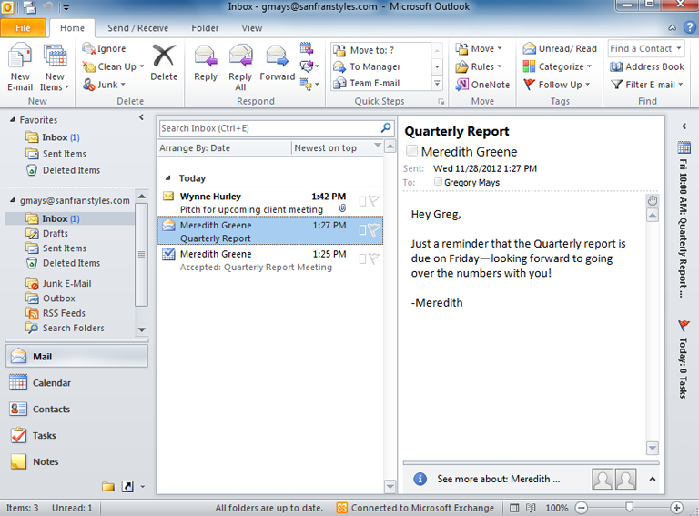
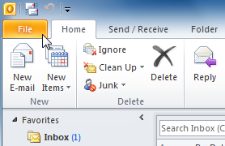
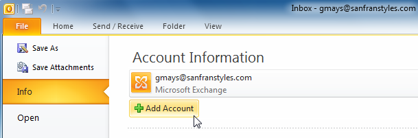
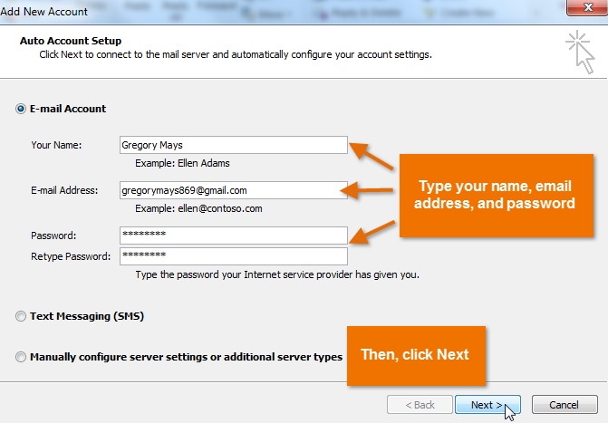
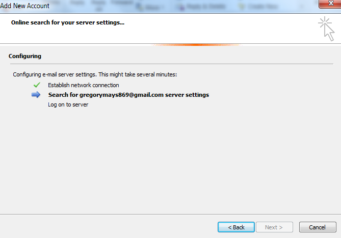
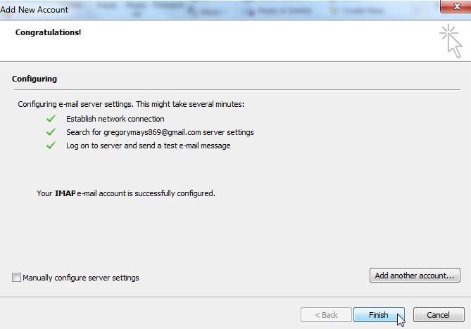
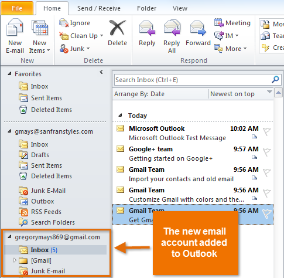

Outlook 2010 este un manager de informații personale inclus în suita Microsoft Office 2010 , care este utilizat în mod obișnuit la locul de muncă. Deși Outlook este probabil cel mai bine cunoscut ca instrument pentru trimiterea și primirea de mesaje de e-mail, acesta include, de asemenea, funcții puternice pentru gestionarea calendarelor, contactelor și sarcinilor.
În această lecție, veți învăța cum să navigați în interfața Outlook 2010, în Panglică și în Vizualizarea în culise. Vom vorbi și despre cum să configurați Outlook.
Cunoașterea interfeței OutlookDacă sunteți familiarizat cu Outlook 2007 sau 2003, veți observa mai multe modificări la interfața 2010. Principala modificare este adăugarea Panglicii, care apare în toate aplicațiile Office 2010. Outlook 2010 folosește și vizualizarea Backstage , pe care o vom trata mai târziu în această lecție.
Indiferent dacă sunteți nou în Outlook sau sunteți familiarizat cu versiunile anterioare, ar trebui să vă acordați ceva timp pentru a vă învăța cum să folosiți interfața.

Vedere în culiseVizualizarea în culise vă oferă diverse opțiuni pentru gestionarea conturilor, salvarea și imprimarea articolelor (cum ar fi un mesaj de e-mail sau un calendar) și multe altele. Deși este similar cu Meniul Fișier din versiunile anterioare ale Outlook, vizualizarea Backstage se va extinde pentru a umple întregul ecran, spre deosebire de un meniu tradițional. Opțiunile din vizualizarea Backstage se vor schimba în funcție de vizualizarea pe care ați selectat-o.
Pentru a accesa vizualizarea Culise:
Va trebui să configurați Outlook înainte de a putea începe să utilizați aplicația pentru a vă gestiona e-mailul, contactele, calendarele și sarcinile. Procesul de configurare va varia în funcție de modul în care intenționați să utilizați Outlook:
Deși Outlook este cel mai frecvent utilizat la locul de muncă, există mai multe motive pentru care ați putea dori să-l utilizați acasă. Dacă utilizați mai multe conturi de e-mail, de exemplu, unul pentru e-mailul personal și unul pentru e-mailul de serviciu, puteți adăuga mai multe conturi în Outlook, permițându-vă să citiți și să gestionați toate mesajele în același timp. Veți avea, de asemenea, confortul suplimentar de a utiliza o aplicație desktop pentru a vă păstra toate informațiile, cum ar fi contactele și calendarul, într-un singur loc.
Pentru a adăuga un cont de e-mail personal:În exemplul nostru, vom adăuga un cont Gmail.




